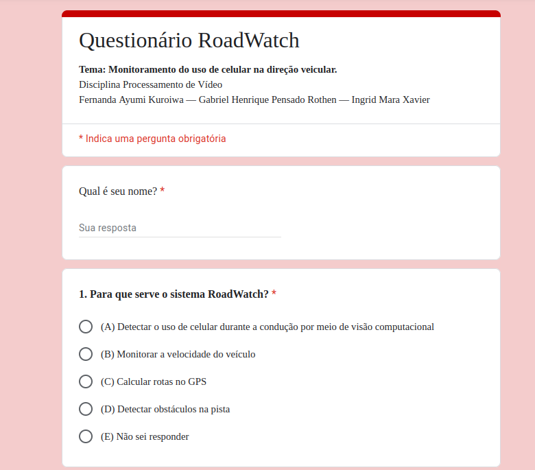
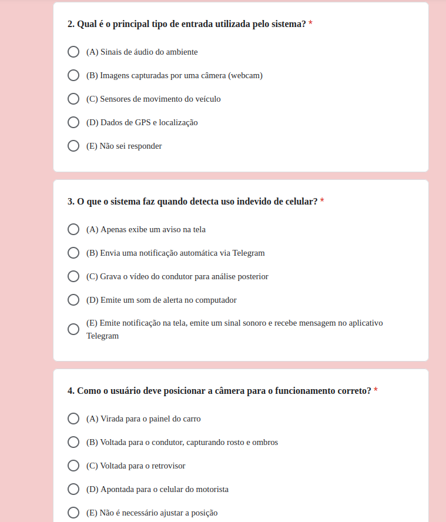
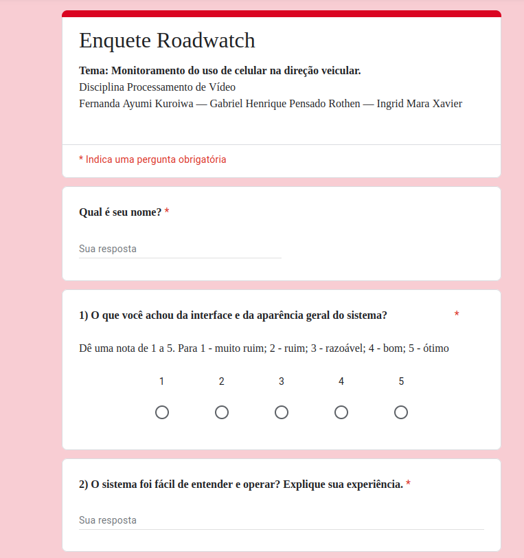

Fernanda Ayumi Kuroiwa — Gabriel Henrique Pensado Rothen — Ingrid Mara Xavier
Tema: Monitoramento do uso de celular na direção veicular.
ETAPA 1: Contexto e Cenário de Aplicação (CA)
Fernanda Ayumi Kuroiwa — Gabriel Henrique Pensado Rothen — Ingrid Mara Xavier
Data: 01/10/2025
Introdução
A distração ao volante é um dos principais fatores que elevam o risco de acidentes de trânsito nos dias atuais, especialmente com o crescimento do uso de celulares. Segundo pesquisas da OMS e de outras organizações, o uso do celular enquanto dirige pode aumentar o risco de colisões em até 400%. No Brasil, essa prática já figura como a terceira maior causa de mortes no trânsito, assim já podemos perceber o perigoso efeito de dirigir distraído mexendo ou olhando no celular pode impactar.
Em termos de infrações entre 2023 e 2024, mais de 50 mil condutores foram autuados por uso de celular ao volante — o que corresponde a uma média de quase 150 flagrantes por dia. Agora, olhando pelo ponto de vista internacional, os dados mostram essa tendência de risco elevado, como por exemplo: nos Estados Unidos, em 2023, 3.275 pessoas morreram em acidentes em que a distração estava envolvida. Além disso, cerca de 12% dos acidentes fatais ao redor do mundo, praticamente todos estavam relacionados a distrações envolvendo o uso de telefone celular enquanto dirigem. Ainda, diversos estudos mostram ainda que tarefas visuais e manuais (como digitar ou deslizar no celular) estão entre as que mais aumentam o risco de acidentes de trânsito.
O uso de celular ao volante é uma das principais causas de distração e acidentes, pois reduz o tempo de reação e aumenta o risco de colisões, colocando em perigo motoristas, passageiros e pedestres. Entrevistas empáticas com condutores e acompanhantes confirmaram que a distração pelo celular é frequente e que há consenso sobre a necessidade de um sistema de alerta rápido que mantenha a privacidade do usuário. Diante disso, este trabalho propõe um Sistema de Processamento de Vídeo (SPV), desenvolvido em C++ com a biblioteca OpenCV, que capta e analisa em tempo real as imagens do motorista. Ao identificar gestos típicos de uso do celular, como segurar o aparelho ou olhar para baixo, o sistema emite alerta sonoro e visual, incentivando o condutor a retomar a atenção. Além de aumentar a segurança e a conscientização, o projeto aplica conceitos da disciplina, como filtragem de imagens, processamento de cores, equalização de histograma, subtração de fundo e detecção de objetos, demonstrando aplicação prática e relevância social.
Etapas de desenvolvimento
(A) Problema a ser abordado
Dentro do conteúdo da disciplina de Processamento de Vídeo, a RoadWatch, será um aplicativo cujo a sua principal função é detectar automaticamente o uso do celular enquanto o motorista dirige.
Justificativa: Desenvolver um sistema que identifique automaticamente o uso do celular durante a condução contribui para a redução de acidentes, atende às recomendações de segurança viária e aproveita técnicas de processamento de vídeo e visão computacional abordadas na disciplina.
(B) Objetivo
Criar um Sistema de Processamento de Vídeo (SPV) capaz de:
Captura de vídeo: o RoadWatch utiliza a câmera frontal do veículo (ou do próprio smartphone fixado no painel ou no para‐brisa) para captar imagens contínuas do rosto, mãos e ambiente à frente do condutor.
Pré-processamento: as imagens são filtradas (redução de ruído, ajuste de brilho/contraste, normalização) e recortadas nas regiões de interesse (por exemplo, face, mãos, volante).
Detecção de objetos / poses: algoritmos identificam, nos frames, os elementos-chave — como a mão segurando um smartphone, a face do motorista e a posição da cabeça — por meio de técnicas de detecção baseadas em redes neurais ou modelos clássicos.
Classificação de ação / comportamento: com base em sequências de frames e características extraídas (ângulos de flexão de dedos, deslocamentos da mão, direção do olhar, tempo de fixação), o sistema classifica comportamentos em “uso do celular” ou “comportamento seguro”.
Alerta em tempo real: quando o sistema detecta um padrão de risco, ele emite um alerta audiovisual ou vibratório.
Registro e logging: o app registra os eventos detectados (tempo, tipo de distração, duração) para posterior análise.
(C) Funcionamento do Sistema
O sistema inicia seu funcionamento assim que o motorista liga o veículo e aciona o programa instalado em um computador de bordo, notebook ou minipc conectado a uma webcam posicionada próxima ao retrovisor...
Exemplo de Uso Prático
Imagine que um motorista está trafegando a 60 km/h em via urbana e recebe uma mensagem de texto...
movimento da mão em direção ao painel;
presença do smartphone na mão;
desvio do olhar;
padrão temporal de digitação.
(D) Benefícios esperados
Segurança: reduz riscos de acidentes ao alertar sobre distrações.
Conscientização: o relatório de uso reforça hábitos de direção segura.
Baixo custo e simplicidade: usa câmera e processamento local.
Integração acadêmica: conecta os conceitos da disciplina a um caso real.
Fernanda Ayumi Kuroiwa — Gabriel Henrique Pensado Rothen — Ingrid Mara Xavier
Data: 13/10/2025
Descrição Geral
O RoadWatch é um sistema de monitoramento inteligente que tem como objetivo
identificar, em tempo real, se o motorista está utilizando o celular enquanto dirige.
A proposta busca reduzir acidentes causados por distrações no trânsito,
detectando o comportamento do condutor através de uma câmera instalada no veículo.
O sistema analisa continuamente o vídeo capturado, verificando padrões como
posição das mãos, olhar do motorista e presença de um celular em cena.
Durante a modelagem funcional, foram definidos os blocos principais que compõem
o funcionamento do sistema, bem como as entradas, saídas e processamentos de cada um.
Essa concepção funcional orienta o desenvolvimento de cada módulo de software e
auxilia na integração entre câmera e sensores e o processamento digital.
Diagrama de Blocos - Modelagem Funcional
Figura 1 – Diagrama de blocos do sistema RoadWatch.
Descrição dos Blocos Funcionais
Bloco 1 – Captura de Imagem
Entrada: vídeo em tempo real da câmera frontal voltada ao motorista.
Processamento: coleta contínua de quadros (frames) com resolução suficiente para detecção de rosto e mãos,
ajustando taxa de quadros e brilho automaticamente conforme as condições de iluminação.
Saída: sequência de frames de vídeo prontos para pré-processamento.
Bloco 2 – Pré-processamento de Imagem
Entrada: frames capturados pelo módulo anterior.
Processamento: redimensionamento, normalização, correção de iluminação,
e definição de uma Região de Interesse focada na cabeça e mãos do motorista.
Essa etapa reduz ruídos e o custo computacional da análise.
Saída: imagens tratadas e otimizadas para detecção.
Bloco 3 – Detecção de Objetos e Posições
Entrada: imagens pré-processadas.
Processamento: aplicação de modelo de detecção baseado em redes neurais, identificando a localização da face, das mãos e do celular.
Cada detecção retorna uma coordenada e uma pontuação de confiança.
Saída: mapa de detecções e suas respectivas probabilidades.
Bloco 4 – Análise de Comportamento do Motorista
Entrada: resultados de detecção dos frames e histórico recente de posições.
Processamento: análise temporal dos frames para verificar gestos ou ações típicas
do uso de celular, como olhar para baixo ou segurar o telefone.
Pode ser utilizada uma rede de classificação de ações ou um filtro temporal.
Saída: rótulo de comportamento (ex.: “atento”, “usando celular”, “mão próxima ao rosto”).
Bloco 5 – Verificação de Movimento do Veículo
Entrada: dados de sensores como o GPS.
Processamento: determina se o veículo está em movimento acima de uma velocidade mínima
(ex.: 5 km/h), evitando que o alerta seja acionado com o carro parado.
Saída: estado do veículo (“em movimento” / “parado”).
Bloco 6 – Fusão de Informações e Decisão
Entrada: resultados da análise de comportamento e estado do veículo.
Processamento: combina os resultados, aplicando regras lógicas e filtros temporais
(por exemplo, exigir que o comportamento seja detectado em 3 frames consecutivos
para confirmar o evento).
Saída: decisão final (“alerta” ou “seguro”).
Bloco 7 – Geração de Alertas e Registro
Entrada: sinal de alerta gerado pelo módulo de decisão.
Processamento: aciona o alerta sonoro e/ou visual no painel do veículo
e registra o evento no log com data, hora e tipo de distração.
Saída: feedback imediato ao motorista e registro do incidente.
Conclusão
A modelagem funcional do RoadWatch define claramente as etapas envolvidas
na identificação de distrações do motorista, desde a captura das imagens até
a emissão do alerta. A decomposição em blocos facilita o desenvolvimento modular,
a validação individual de cada componente e a futura integração com hardware real.
Essa abordagem garante que o sistema possa evoluir de forma estruturada,
permitindo substituição ou aprimoramento de módulos específicos
(por exemplo, trocar o modelo de detecção por outro mais eficiente)
sem comprometer o funcionamento geral do sistema.
ETAPA 4: Desenvolvimento do Sistema de Processamento da Visão (SPV)
A Modelagem Funcional do Sistema de Processamento da Visão (SPV) do RoadWatch organiza de forma lógica os módulos e operações necessárias para transformar a entrada de vídeo capturada pela câmera em notificações automáticas de uso indevido de celular durante a condução. O processo é estruturado em cinco etapas principais: captura de imagem, pré-processamento, extração de características, lógica de decisão e saída.
1. Captura de Imagem
O sistema recebe como entrada um fluxo contínuo de vídeo proveniente da webcam conectada ao computador.
Essa captura é feita em tempo real por meio da biblioteca OpenCV, utilizando a classe VideoCapture, que garante uma taxa de quadros adequada para o monitoramento contínuo do ambiente.
Caso a câmera não seja detectada, o programa exibe uma mensagem de erro no console, utilizando as funções de saída da biblioteca padrão C++
2. Pré-Processamento
As imagens capturadas são convertidas para o formato em tons de cinza com a função cvtColor, reduzindo a complexidade computacional.
Em seguida, aplica-se um subtrator de fundo (BackgroundSubtractorMOG2), responsável por distinguir objetos em movimento do cenário estático.
Operações como erosão e dilatação ajudam a remover ruídos e destacam melhor as regiões de interesse.
Essas etapas, todas implementadas com funções do OpenCV, garantem maior precisão na detecção de movimento real.
3. Extração de Características
Com a máscara de movimento pronta, o sistema utiliza funções como findContours e contourArea para identificar regiões em movimento e determinar qual delas possui a maior área.
O retângulo delimitador (boundingRect) é desenhado em torno do objeto detectado, e o texto “OBJETO DETECTADO” é exibido na imagem em tempo real.
Além disso, o código utiliza o método calcOpticalFlowPyrLK para rastrear pontos de interesse entre quadros consecutivos, permitindo estimar o movimento real e contínuo dentro da cena.
4. Lógica de Decisão
A lógica de decisão é baseada na análise temporal do movimento detectado.
O programa monitora o número de quadros consecutivos com movimento significativo; se o contador (movimentoConsecutivo) ultrapassar um limiar, o sistema confirma a presença de movimento real e persistente.
Esse controle evita falsos positivos causados por ruídos ou pequenas variações na iluminação.
Variáveis booleanas e condicionais controlam a abertura de janelas de alerta e a exibição de mensagens no console, utilizando recursos da biblioteca padrão C++.
5. Saída
Na etapa final, o sistema gera uma janela de alerta com o nome da equipe e uma mensagem visual de detecção.
Também são registradas mensagens no console, indicando a ocorrência de movimento real.
A biblioteca pode ser utilizada para gerar timestamps dos eventos detectados, possibilitando a integração futura com sistemas de registro ou auditoria.
Descrição da Implementação do Sistema de Processamento da Visão (SPV)
1. Visão Geral do Sistema
O RoadWatch SPV implementa um pipeline de monitoramento inteligente do condutor baseado em visão computacional. O programa captura o vídeo em tempo real no sistema Ubuntu Linux, realiza calibração óptica, estima a pose e a posição das mãos, analisa interações com o rosto e aplica uma lógica de decisão temporal para identificar o uso indevido de celular.
Quando o comportamento é confirmado, o evento é notificado automaticamente via Telegram, permitindo resposta imediata e automatizada.
Bibliotecas utilizadas:
• OpenCV → Captura e exibição de vídeo, calibração e correção de distorção óptica;
• C++ Standard Library – I/O → Entrada e saída de dados no console (mensagens, logs e erros);
• C++ Time Library → Manipulação de data e hora para registro de eventos (timestamp).
Todas as bibliotecas utilizadas são gratuitas, amplamente reconhecidas e possuem documentação pública, assegurando a reprodutibilidade e a confiabilidade do sistema desenvolvido.
2. Explicações sobre o Script Desenvolvido
A seguir são apresentados os scripts necessários para rodar a aplicação e um vídeo explicando passo a passo:
Passo a passo de como rodar o código.
ETAPA 5: Desenvolvimento do laboratório experimental (LEx)
Fernanda Ayumi Kuroiwa — Gabriel Henrique Pensado Rothen — Ingrid Mara Xavier
Data: 17/11/2025
Introdução
O Sistema de Processamento Visual RoadWatch foi desenvolvido com o objetivo de detectar o uso indevido de celular durante a condução,
utilizando técnicas de visão computacional em tempo real. Por meio de uma webcam posicionada em frente ao condutor, o sistema realiza o rastreamento
de pontos-chave do corpo (mãos, rosto e ombros) e aplica regras de decisão que identificam comportamentos suspeitos, como segurar o celular ou olhar
para baixo.
Objetivo
Preparar e executar o Teste de Campo (TC) do Sistema de Processamento Visual RoadWatch, simulando situações reais de uso em tempo real com webcam, operadas por um usuário leigo (pessoas externas à equipe), para validar a funcionalidade, usabilidade e clareza do sistema de detecção de uso indevido de celular durante a condução.
Casos de Aplicação
A equipe desenvolveu cenários de teste que representam situações reais de um condutor:
Condutor sem uso de celular (condição normal).
Condutor segurando o celular na mão direita.
Condutor com o celular próximo ao ouvido.
Condutor olhando para baixo (simulando digitação).
Esses testes serão executados em tempo real com uma webcam, no ambiente de laboratório ou doméstico, considerando iluminação ambiente e posicionamento da câmera semelhantes a um painel de veículo.
Roteiro do Laboratório Experimental
Procedimento experimental
O procedimento experimental tem como objetivo avaliar o funcionamento do sistema RoadWatch em condições reais de uso,
permitindo que um usuário leigo opere o sistema e observe seu comportamento em diferentes cenários. A seguir são apresentadas as instruções
detalhadas para a execução do experimento:
Preparação do ambiente:
Posicione o computador ou notebook em local bem iluminado, simulando o interior de um veículo.
A webcam deve estar fixa de modo a enquadrar o rosto e os ombros do participante,
semelhante à posição de uma câmera instalada no painel de um carro.
Inicialização do sistema:
Instale o OpenCV.
Rode o arquivo .cpp de acordo com as instruções anteriores.
Verifique se o vídeo ao vivo do condutor está sendo exibido corretamente.
Aperte "i" para iniciar, então o sistema detecta o objeto ou não e aparece na tela "Movimento detectado", senão não aparece nenhuma mensagem.
Aperte "q" para sair. As imagens são salvas automomaticamente
Vídeo demonstrativo do funcionamento do sistema RoadWatch em tempo real.
Execução dos cenários de teste:
O participante deverá realizar as quatro situações definidas nos Casos de Aplicação, observando as mensagens exibidas na tela e as notificações enviadas via Telegram:
Cenário 1: Condutor sem uso de celular (situação normal).
Cenário 2: Condutor segurando o celular com a mão direita próxima ao rosto.
Cenário 3: Condutor com o celular junto ao ouvido (simulando uma ligação).
Cenário 4: Condutor olhando para baixo, como se estivesse digitando.
Observação dos resultados:
Durante a execução, observe se o sistema exibe corretamente o status “Uso de celular detectado” ou “Condutor normal”.
Confirme se as mensagens de alerta são enviadas automaticamente pelo bot do Telegram.
Anote possíveis falsos positivos (alerta sem uso real de celular) ou falhas de detecção (não reconhecimento do uso).
Encerramento do teste:
Feche o programa após concluir os quatro cenários.
Preencha o questionário de avaliação (objetivo e subjetivo) fornecido pela equipe.
Informe se houve qualquer dificuldade de uso ou problema técnico.
Questionário de avaliação do usuário

Print do Questionário proposto.

Print do Questionário proposto.
Enquete Subjetiva de Opinião (ESO)

Print da Enquente proposta.Print da Enquete proposta.
Análise das Respostas do Questionário e da Enquete
Foram analisadas as respostas de três participantes: Beatriz, Ana Carolina e Eduardo. O objetivo era verificar:
(i) Se o usuário entendeu o assunto do tema através do experimento.
(ii) Se obteve os resultados esperados.
(iii) Se entendeu a aplicação do sistema RoadWatch.
Todos os participantes avaliaram a interface como nota 5 (ótimo), o que mostra que a apresentação do sistema foi clara e intuitiva.
Nas respostas abertas, todos afirmaram que conseguiram rodar o experimento, entender o código e seguir as instruções facilmente. Não houve relatos de confusão ou dúvida sobre como o sistema funciona.
As notas atribuídas à detecção foram 4, 5 e 5, demonstrando que:
O sistema funcionou corretamente na maior parte dos testes.
Os usuários perceberam coerência entre sua ação (usar celular) e a resposta do sistema.
Não houve falhas graves ou comportamento inesperado.
Nas respostas sobre dificuldades, duas pessoas responderam “Não”, e uma disse “Não sei”, indicando ausência de problemas relevantes.
Os usuários demonstraram entender completamente para que o RoadWatch serve: detectar o uso de celular durante a condução.
Todos os três critérios foram atendidos pelos usuários: entendimento do tema, obtenção dos resultados e compreensão da aplicação do sistema.
Fernanda Ayumi Kuroiwa — Gabriel Henrique Pensado Rothen — Ingrid Mara Xavier
Data: 24/11/2025
Introdução
Objetivos
O objetivo deste projeto é desenvolver um Sistema de Processamento de Vídeo (SPV) capaz de identificar, em tempo real, comportamentos de distração do motorista relacionados ao uso de telefone celular.
O sistema, implementado em C++ com a biblioteca OpenCV, analisa imagens capturadas pela câmera frontal para detectar gestos característicos, como segurar o celular, olhar para baixo ou posicionar as mãos de forma suspeita.
Ao reconhecer essas ações, o SPV emite alertas sonoros e visuais, incentivando o condutor a retomar a atenção na via.
Além disso, o projeto aplica conteúdos teóricos da disciplina, incluindo filtragem espacial, subtração de fundo, equalização de histograma, processamento de cores e detecção de objetos, demonstrando integração entre teoria e prática com relevância social.
Cenário de Aplicação
A distração ao volante é uma das principais causas de acidentes de trânsito no mundo, especialmente devido ao uso crescente de celulares durante a condução.
No Brasil, entre 2023 e 2024, mais de 50 mil motoristas foram autuados por uso de celular ao volante — uma média de 150 flagrantes por dia.
Em escala global, estima-se que 12% dos acidentes fatais envolvem algum tipo de distração, sendo o uso de telefone celular o fator predominante.
Nos Estados Unidos, por exemplo, 3.275 pessoas morreram em 2023 em acidentes relacionados à distração.
Entrevistas empáticas realizadas com motoristas e acompanhantes reforçam esse cenário: a distração por celular é frequente, reconhecida como perigosa e associada à redução do tempo de reação.
Os entrevistados apontam a necessidade de um sistema de alerta rápido, não intrusivo e que preserve a privacidade do usuário.
Diante desse panorama, o SPV proposto apresenta um cenário de aplicação altamente relevante:
auxiliar motoristas a manter a atenção enquanto dirigem, reduzindo riscos e contribuindo para a segurança no trânsito.
Fundamentação Teórica
O desenvolvimento do sistema baseia-se em conceitos fundamentais de Processamento Digital de Imagens e Visão Computacional, permitindo extrair informações significativas do vídeo capturado em tempo real.
Entre os principais conceitos utilizados, destacam-se:
• Filtragem Espacial
A aplicação de filtros permite reduzir ruídos, realçar contornos e melhorar a qualidade da imagem antes da etapa de detecção.
Técnicas como filtros passa-baixa, passa-alta e suavização são essenciais para preparar os quadros para análise.
• Processamento de Cores
Transformações de cores entre diferentes espaços (BGR, HSV, YCrCb) ajudam a destacar regiões de interesse, como pele das mãos e rosto, facilitando a identificação de gestos relacionados ao uso do celular.
• Equalização de Histograma
A equalização melhora o contraste da imagem, principalmente em ambientes com variação de iluminação — condição comum dentro de veículos — aumentando a precisão da detecção.
• Subtração de Fundo
Métodos de background subtraction são úteis para isolar movimentos relevantes, como levantar a mão ou aproximá-la do rosto.
Isso ajuda a distinguir ações comuns de comportamentos associados ao uso do celular.
• Detecção de Objetos e Gestos
A análise das regiões segmentadas permite identificar padrões típicos de uso do celular.
O sistema monitora poses e movimentos que sugerem a presença do aparelho ou a atenção desviada para baixo.
Materiais e métodos
A modelagem funcional do RoadWatch descreve como o sistema identifica, em tempo real, o uso indevido de celular pelo motorista a partir das imagens capturadas pela câmera instalada no veículo. O funcionamento é dividido em módulos organizados em sequência, formando um pipeline completo de processamento de vídeo e tomada de decisão.
O sistema inicia com a captura de imagem, que obtém continuamente os frames da câmera frontal com resolução adequada para reconhecer rosto e mãos. Em seguida, ocorre o pré-processamento, etapa responsável por melhorar a qualidade das imagens através de normalização, correção de iluminação, redução de ruídos e definição de uma região de interesse focada no motorista.
Com as imagens tratadas, o módulo de detecção de objetos e posições identifica elementos relevantes na cena, como face, mãos e celular, retornando coordenadas e níveis de confiança. Esses dados alimentam a análise de comportamento, que avalia temporalmente os movimentos e gestos do motorista para identificar ações típicas do uso do celular, como desviar o olhar para baixo ou levar a mão em direção ao rosto.
O sistema também conta com a verificação do movimento do veículo, que utiliza dados de sensores (como GPS) para confirmar se o carro está em deslocamento, evitando alertas indevidos quando o veículo está parado.
A etapa seguinte, de fusão de informações e decisão, integra o comportamento detectado e o estado do veículo, aplicando regras lógicas e filtros temporais para confirmar se o motorista está realmente utilizando o celular.
Por fim, o módulo de alertas e registro gera avisos sonoros ou visuais quando o uso do celular é confirmado e grava o evento no log, com data e hora, permitindo rastreamento e possíveis ações corretivas.
Assim, a modelagem funcional define de forma estruturada o fluxo de informações, garantindo que o RoadWatch combine visão computacional e análise temporal para identificar comportamentos perigosos e alertar o motorista de maneira precisa e imediata.
Modelagem Funcional do SPV (MF)
Diagrama de Blocos - Modelagem Funcional
Figura 1 – Diagrama de blocos do sistema RoadWatch.
Descrição da implementação do SPV
O SPV – Sistema de Processamento Visual da equipe ROADWATCH foi implementado em C++ utilizando a biblioteca OpenCV para captura e processamento de vídeo, a biblioteca padrão de C++ (iostream, chrono, ctime) para entrada/saída e medição de tempo, e a biblioteca cURL para integração com o Telegram. A aplicação é compilada e executada em ambiente Ubuntu Linux por meio de CMake, seguindo o fluxo: criação da pasta build, configuração com cmake .., compilação com make e execução do binário ./spv.
Ao iniciar o programa, é exibida uma tela de menu construída com OpenCV, contendo o nome do sistema, o nome da equipe e instruções de uso. A partir desse menu, o usuário pode pressionar a tecla ‘i’ para iniciar a detecção pela webcam ou ‘q’ (ou ESC) para encerrar. Após a inicialização, o sistema abre a câmera (resolução 640×480) e cria um subtrator de fundo do tipo BackgroundSubtractorMOG2, configurado com histórico, limiar de variância e detecção de sombras ajustados para tornar o detector mais estável.
Em cada iteração do laço principal, o SPV captura um frame e define uma Região de Interesse (ROI) central, reduzindo a análise às áreas mais relevantes e minimizando falsos positivos nas bordas. Sobre essa ROI é aplicado um filtro Gaussiano (GaussianBlur) para suavizar ruídos de alta frequência e, em seguida, o modelo MOG2 gera a máscara de movimento. Essa máscara passa por um pós-processamento mais pesado: limiarização (threshold), operações morfológicas de abertura e fechamento (morphologyEx com elementos estruturantes elípticos) e dilatação, tudo para remover ruído, sombras e pequenas variações de luz, preservando apenas regiões de movimento consistente.
Os contornos são então extraídos com findContours, e cada contorno é filtrado por área mínima e máxima e por razão de aspecto (largura/altura), descartando objetos muito pequenos, muito grandes ou com formato inconsistente. Entre os contornos válidos, o sistema seleciona aquele com maior área como candidato principal. Em paralelo, é aplicado um esquema de estabilidade temporal, que conta quantos frames consecutivos apresentam movimento válido (framesComMovimento) e quantos aparecem sem movimento (framesSemMovimento). Só quando o número de frames com movimento ultrapassa um limite pré-definido (LIMITE_FRAMES) o sistema considera que há movimento real e persistente, reduzindo falsos positivos.
Quando o movimento real é confirmado, o programa desenha um retângulo azul ao redor do objeto, exibe a mensagem “MOVIMENTO DETECTADO!” e mostra uma barra de progresso na base da imagem, indicando o tempo de movimento contínuo. Caso esse movimento persista por pelo menos 1 segundo, o SPV salva automaticamente o frame completo da webcam em um arquivo JPEG com timestamp no nome, emite um beep sonoro no terminal e registra a mensagem de log informando o arquivo salvo.
Na sequência, ocorre a integração com o Telegram: o código utiliza funções específicas (enviarMensagemTelegram e enviarFotoTelegram) que empregam a biblioteca cURL para fazer requisições HTTP à API do Telegram. Assim, o sistema envia uma mensagem de texto (“Movimento detectado!”) e, em seguida, envia também a imagem salva para o chat configurado por meio do botToken e do chatID. Dessa forma, além do alerta visual na tela e do aviso sonoro local, o SPV gera uma notificação remota com evidência visual do evento, permitindo monitoramento em tempo real e registro dos incidentes.
1. Análise Técnica
1.1 Métricas Objetivas
As métricas objetivas são usadas para avaliar a eficácia do sistema em termos de detecção e precisão. Aqui estão as métricas mais relevantes para avaliar a performance do SPV:
Precisão: Refere-se à proporção de previsões corretas feitas pelo sistema, ou seja, o número de detecções corretas (positivos verdadeiros + negativos verdadeiros) dividido pelo número total de testes.
Sensibilidade: A sensibilidade mede a capacidade do sistema de identificar corretamente os casos positivos (ex: quando o motorista está realmente usando o celular).
Falsos Positivos: Representa a quantidade de vezes que o sistema alertou para um comportamento de distração que não estava realmente ocorrendo. Ou seja, é a proporção de previsões incorretas onde o sistema identificou um evento que não existia.
Taxa de Detecção de Movimentos Relevantes: Mede a capacidade do sistema de identificar movimentos que indicam distração, como olhar para baixo ou pegar o celular.
OBS: As métricas a seguir foram baseadas no vídeo em anexo no final do relatório.
Precisão
Mais de 90%
Sensibilidade
Alta
Falsos Positivos
Cerca de 10%
Taxa de Detecção de Movimentos Relevantes
Mais de 90%
1.2 Métricas Qualitativas
As métricas qualitativas envolvem aspectos subjetivos relacionados à experiência de uso e à aceitação do sistema pelos motoristas. Abaixo estão algumas das métricas qualitativas observadas:
Usabilidade
Alta
Feedback dos Usuários
10/10
Impacto na Concentração e Segurança
Impacto positivo
1.3 Resultados e Conclusões Parciais
Esta seção apresenta os principais achados dos testes realizados, incluindo a eficácia do sistema e possíveis melhorias necessárias.
Acertos principais
O sistema apresentou alta precisão na detecção de comportamentos de distração, com bons resultados nas métricas de sensibilidade e especificidade. A detecção de gestos como olhar para baixo e levantar a mão foi eficaz, com poucos falsos negativos.
Resultado: O sistema tem mostrado um bom desempenho na identificação dos comportamentos de distração mais comuns, como o uso do celular, alcançando alta precisão e sensibilidade.
Desafios encontrados
Em alguns testes, o sistema apresentou dificuldade em ambientes com iluminação variável, o que afetou a precisão. Além disso, o processamento em tempo real pode ser afetado por movimentos rápidos ou gestos atípicos do motorista, o que pode levar a um aumento no número de falsos positivos.
Resultado: A variabilidade da iluminação e os gestos inesperados do motorista podem comprometer a detecção em alguns cenários. Essas condições precisam ser melhoradas para garantir um desempenho consistente.
Melhorias futuras
Implementação de algoritmos de aprendizado de máquina para adaptação dinâmica aos diferentes comportamentos dos motoristas e melhorias na detecção em ambientes de iluminação variável. A integração com outros sensores do veículo, como câmeras de bordo, poderia aumentar a precisão da detecção.
Resultado: A utilização de inteligência artificial (IA) para melhorar a adaptação a diferentes comportamentos dos motoristas e condições de iluminação pode melhorar significativamente o desempenho do sistema. Além disso, a combinação com sensores de bordo pode aumentar a precisão da detecção.
>
Laboratório Experimental
Introdução
O Sistema de Processamento Visual RoadWatch foi desenvolvido com o objetivo de detectar o uso indevido de celular durante a condução,
utilizando técnicas de visão computacional em tempo real. Por meio de uma webcam posicionada em frente ao condutor, o sistema realiza o rastreamento
de pontos-chave do corpo (mãos, rosto e ombros) e aplica regras de decisão que identificam comportamentos suspeitos, como segurar o celular ou olhar
para baixo.
Objetivo
Preparar e executar o Teste de Campo (TC) do Sistema de Processamento Visual RoadWatch, simulando situações reais de uso em tempo real com webcam, operadas por um usuário leigo (pessoas externas à equipe), para validar a funcionalidade, usabilidade e clareza do sistema de detecção de uso indevido de celular durante a condução.
Casos de Aplicação
A equipe desenvolveu cenários de teste que representam situações reais de um condutor:
Condutor sem uso de celular (condição normal).
Condutor segurando o celular na mão direita.
Condutor com o celular próximo ao ouvido.
Condutor olhando para baixo (simulando digitação).
Esses testes serão executados em tempo real com uma webcam, no ambiente de laboratório ou doméstico, considerando iluminação ambiente e posicionamento da câmera semelhantes a um painel de veículo.
Roteiro do Laboratório Experimental
Procedimento experimental
O procedimento experimental tem como objetivo avaliar o funcionamento do sistema RoadWatch em condições reais de uso,
permitindo que um usuário leigo opere o sistema e observe seu comportamento em diferentes cenários. A seguir são apresentadas as instruções
detalhadas para a execução do experimento:
Preparação do ambiente:
Posicione o computador ou notebook em local bem iluminado, simulando o interior de um veículo.
A webcam deve estar fixa de modo a enquadrar o rosto e os ombros do participante,
semelhante à posição de uma câmera instalada no painel de um carro.
Inicialização do sistema:
Instale o OpenCV.
Rode o arquivo .cpp de acordo com as instruções anteriores.
Verifique se o vídeo ao vivo do condutor está sendo exibido corretamente.
Aperte "i" para iniciar, então o sistema detecta o objeto ou não e aparece na tela "Movimento detectado", senão não aparece nenhuma mensagem.
Aperte "q" para sair. As imagens são salvas automomaticamente
Vídeo demonstrativo do funcionamento do sistema RoadWatch em tempo real.
Execução dos cenários de teste:
O participante deverá realizar as quatro situações definidas nos Casos de Aplicação, observando as mensagens exibidas na tela e as notificações enviadas via Telegram:
Cenário 1: Condutor sem uso de celular (situação normal).
Cenário 2: Condutor segurando o celular com a mão direita próxima ao rosto.
Cenário 3: Condutor com o celular junto ao ouvido (simulando uma ligação).
Cenário 4: Condutor olhando para baixo, como se estivesse digitando.
Observação dos resultados:
Durante a execução, observe se o sistema exibe corretamente o status “Uso de celular detectado” ou “Condutor normal”.
Confirme se as mensagens de alerta são enviadas automaticamente pelo bot do Telegram.
Anote possíveis falsos positivos (alerta sem uso real de celular) ou falhas de detecção (não reconhecimento do uso).
Encerramento do teste:
Feche o programa após concluir os quatro cenários.
Preencha o questionário de avaliação (objetivo e subjetivo) fornecido pela equipe.
Informe se houve qualquer dificuldade de uso ou problema técnico.
Questionário de avaliação do usuário
Print do Questionário proposto.Print do Questionário proposto.
Enquete Subjetiva de Opinião (ESO)
Print da Enquente proposta.Print da Enquete proposta.
Análise das Respostas do Questionário e da Enquete
Foram analisadas as respostas de três participantes: Beatriz, Ana Carolina e Eduardo. O objetivo era verificar:
(i) Se o usuário entendeu o assunto do tema através do experimento.
(ii) Se obteve os resultados esperados.
(iii) Se entendeu a aplicação do sistema RoadWatch.
Todos os participantes avaliaram a interface como nota 5 (ótimo), o que mostra que a apresentação do sistema foi clara e intuitiva.
Nas respostas abertas, todos afirmaram que conseguiram rodar o experimento, entender o código e seguir as instruções facilmente. Não houve relatos de confusão ou dúvida sobre como o sistema funciona.
As notas atribuídas à detecção foram 4, 5 e 5, demonstrando que:
O sistema funcionou corretamente na maior parte dos testes.
Os usuários perceberam coerência entre sua ação (usar celular) e a resposta do sistema.
Não houve falhas graves ou comportamento inesperado.
Nas respostas sobre dificuldades, duas pessoas responderam “Não”, e uma disse “Não sei”, indicando ausência de problemas relevantes.
Os usuários demonstraram entender completamente para que o RoadWatch serve: detectar o uso de celular durante a condução.
Todos os três critérios foram atendidos pelos usuários: entendimento do tema, obtenção dos resultados e compreensão da aplicação do sistema.
O projeto RoadWatch – Sistema de Processamento de Vídeo (SPV) consolidou, de forma integrada, os principais conteúdos estudados na disciplina, demonstrando como conceitos de processamento digital de imagens, visão computacional e análise temporal podem ser aplicados para resolver um problema real e socialmente relevante: a distração do motorista pelo uso do celular.
Ao longo do desenvolvimento, a equipe implementou um pipeline completo em C++ e OpenCV, estruturado em módulos independentes e funcionais. A captura de vídeo, o pré-processamento com filtragem e correção de iluminação, a segmentação por subtração de fundo, a detecção de movimento e a análise temporal permitiram construir um sistema robusto, capaz de diferenciar ações rápidas e ruídos visuais de comportamentos consistentes. A integração com a API do Telegram, utilizando a biblioteca cURL, ampliou o impacto da solução ao permitir alertas remotos com imagens reais do evento detectado, aproximando o sistema de um cenário de aplicação concreto.
Durante os testes, ficou evidente que a abordagem baseada em detecção de movimento estabilizada por múltiplos frames reduz drasticamente falsos positivos, mantendo o sistema responsivo mesmo em condições de iluminação variável — um desafio típico em ambientes internos de veículos. Além disso, a criação de mecanismos de persistência temporal (frames consecutivos com movimento) tornou a detecção mais confiável, alinhada às boas práticas de visão computacional.
O RoadWatch atingiu os objetivos propostos: identificar sinais de distração associados ao uso de celular e emitir alertas imediatos ao usuário. O sistema demonstrou capacidade de reconhecer gestos suspeitos, registrar eventos, notificar o motorista e gerar evidências para análises posteriores. A solução possui potencial de evolução futura, incluindo modelos supervisionados, reconhecimento de poses com MediaPipe e fusão com sensores do veículo, ampliando sua precisão e aplicabilidade.
Em síntese, o projeto proporcionou à equipe uma experiência prática completa, unindo teoria, implementação e validação. O RoadWatch se destaca como uma ferramenta tecnicamente sólida e socialmente impactante, reforçando a importância do uso de tecnologias de visão computacional para promover segurança no trânsito e mitigar riscos relacionados à distração do motorista.
Referências Bibliográficas
Documentação oficial do OpenCV – background subtraction (BackgroundSubtractorMOG2, erosão/dilatação, máscara de movimento)
OPENCV. Background Subtraction. OpenCV Documentation, release 4.x.
Documentação oficial do OpenCV – optical flow Lucas-Kanade (calcOpticalFlowPyrLK)
OPENCV. Optical Flow – Lucas–Kanade method. OpenCV Documentation, release 4.x.
Revisão de sistemas de detecção de distração baseados em sensores visuais (câmera)
FERNÁNDEZ, A. et al. Driver Distraction Using Visual-Based Sensors and Algorithms. Sensors, v. 16, n. 11, 2016.
Relatório 1
Fernanda Ayumi Kuroiwa — Gabriel Henrique Pensado Rothen — Ingrid Mara Xavier
Data: 06/10/2025
1. Introdução
O presente Relatório 1 documenta as atividades iniciais da disciplina ESZI032 – Processamento de Vídeo, cujo objetivo é iniciar o uso do OpenCV, compreender os comandos básicos para visualizar e gravar imagens e vídeos e produzir um primeiro vídeo demonstrativo a ser inserido no relatório. As tarefas foram organizadas em três partes: preparação do ambiente e execução guiada (Parte 1), estudo e adaptação de operações básicas em imagens e vídeos (Parte 2) e obtenção de material próprio com webcam (Parte 3), conforme roteiro do Laboratório 1 – Captura de Imagem e Vídeo (2025.3).
Na Parte 1, foi configurado o ambiente seguindo as instruções disponibilizadas no Moodle. Na Parte 2, estudamos exemplos de leitura, exibição e gravação de imagens (incluindo a adaptação do tutorial para a imagem messi5.jpg e salvamento em .png) e de leitura/gravação de vídeos (execução dos cinco programas indicados e adaptação para o arquivo big_buck_bunny.mp4), descrevendo a função de cada programa e seu uso em processamento de vídeo. Por fim, na Parte 3, produzimos materiais próprios: uma foto do grupo (com roupas destacando as cores RGB), uma montagem de “avatares” e quatro vídeos de teste (movimentos lentos/rápidos com pessoas e com objeto), que servirão de base para análises futuras e evolução do projeto.
Além de cumprir os objetivos imediatos do laboratório, este relatório busca tornar-se uma referência prática para a equipe RoadWatch sobre a programação de entrada e saída com câmeras, bem como o manuseio de arquivos de imagem e vídeo, estabelecendo um padrão de organização e clareza que será reaproveitado nas próximas etapas.
2. Fundamentos Básicos
2.1. Imagem digital e representação em memória
Uma imagem digital é uma matriz H × W de pixels com C canais (por exemplo, 3 para imagens coloridas). No OpenCV (C++), a estrutura mais usada é cv::Mat, com valores normalmente inteiros de 8 bits por canal (0–255) em imagens usuais.
2.2. Operações básicas em imagens (E/S)
Leitura (entrada): carregar arquivo de imagem com cv::imread().
Exibição: mostrar a imagem com cv::imshow() e aguardar tecla com cv::waitKey().
Gravação (saída): salvar em outro formato com cv::imwrite() (por exemplo, PNG).
Essas três operações consolidam o fluxo de entrada/saída e permitem conversão simples de formatos.
2.3. Vídeo: frames, FPS, resolução, codec e contêiner
Frame: cada imagem individual da sequência do vídeo.
FPS: quadros por segundo; influencia a fluidez visual.
Resolução: largura × altura; afeta nitidez e tamanho do arquivo.
Codec/Contêiner: compressão e empacotamento (ex.: MP4/mp4v).
Na prática, usamos cv::VideoCapture para leitura e cv::VideoWriter para gravação, ajustando FPS, resolução e codec conforme o objetivo.
2.4. Captura com webcam (dispositivos de vídeo)
Abrir o dispositivo: cv::VideoCapture(0) (ou outro índice/caminho).
Ler frames em laço; opcionalmente exibir e/ou gravar.
Finalizar liberando recursos (fechar janelas e release()).
Condições como iluminação e velocidade de movimento influenciam nitidez, desfoque e taxa de compressão.
2.5. Organização dos exemplos e referencial de estudo
Para cada programa executado, descreva o que ele faz, os parâmetros usados (caminhos, FPS, resolução, codec) e como pode ser reutilizado no projeto. Essa documentação vira um guia rápido para as próximas etapas.
2.6. Conexão com os objetivos do Lab 1
Os conceitos acima (E/S de imagens, leitura/gravação de vídeos e captura com webcam) atendem aos objetivos do Laboratório 1 e servem de base para o desenvolvimento do sistema RoadWatch nas etapas seguintes.
Arquivos de teste (vídeo/imagem):messi5.jpg, big_buck_bunny.mp4
Ferramentas auxiliares: Visualizador de imagens, reprodutor de vídeo, terminal
3.3. Procedimentos Experimentais
Imagem – leitura/exibição/gravação:
carregar messi5.jpg, exibir em janela e salvar como saida.png (verificar que o arquivo foi gerado).
Vídeo – leitura: abrir big_buck_bunny.mp4 com VideoCapture, ler frames em laço e exibir.
Vídeo – gravação: gravar um trecho para saida.mp4 definindo resolução e FPS (ex.: 640×480 @ 30fps).
Webcam – captura de foto: capturar uma imagem do grupo e salvar como foto_grupo.png
(roupas com cores RGB destacadas).
Webcam – “avatares”: montar uma imagem com retratos (avatars) dos integrantes e salvar como avatares.png.
Webcam – vídeos próprios: gravar 4 vídeos curtos:
Pessoa com movimento lento e rápido
Objeto com movimento lento e rápido
Nomear como pessoa_lento.mp4, pessoa_rapido.mp4, objeto_lento.mp4, objeto_rapido.mp4.
Anotações no relatório: descrever o que cada programa faz, parâmetros usados (FPS, resolução, codec) e observações sobre iluminação, nitidez, desfoque e compressão.
Iluminação: ambiente interno com luz frontal difusa; repetir com luz lateral
Duração dos vídeos: 5–10 s (cada)
3.6. Critérios de Validação e Registro
Verificar se a resolução e FPS do arquivo de saída batem com o solicitado.
Registrar observações de nitidez, ruído, desfoque por movimento e variações de iluminação.
Inserir no relatório figuras (frames representativos) com legenda acessível e breve análise.
Guardar prints de terminal com logs de execução e mensagens de erro (se houver).
4. Resultados e Análises
(A) Leitura de imagem em arquivo e exibir na tela:
As imagens apresentadas correspondem à execução prática do tutorial “Getting Started with Images” da biblioteca OpenCV, utilizando a imagem messi5.jpg. O objetivo é demonstrar a leitura de uma imagem a partir de um arquivo e sua exibição em uma janela na tela.
Primeira imagem — Execução pela linha de comando (C++)
Vê-se a janela do programa DisplayImage, aberta com o título “Display Image”.
Dentro dessa janela, aparece uma fotografia colorida do jogador de futebol Lionel Messi. A figura demonstra o funcionamento correto do programa em C++ para leitura e exibição de imagens, conforme o tutorial da documentação do OpenCV. A execução confirma que o código foi compilado e executado com sucesso, exibindo a imagem carregada.
Captura de tela do programa DisplayImage em execução no terminal Linux,
exibindo uma janela com a imagem de um jogador de futebol em campo.
Esse resultado demonstra o correto funcionamento do código para abertura de imagens.
Segunda imagem — Execução em Python
Abre-se uma janela intitulada “image”, exibindo a mesma fotografia de Messi, agora processada via script Python utilizando as funções cv2.imread() e cv2.imshow().O resultado visual confirma que o código em Python reproduz o mesmo comportamento do programa em C++, realizando corretamente a leitura e exibição da imagem messi5.jpg.
Configurando o Python
(B) Leitura e gravação de vídeo:
1) video_read_from_files
O programa utiliza a biblioteca OpenCV para abrir, ler e exibir um vídeo a partir de um arquivo, mostrando cada frame em uma nova janela e permitindo que o usuário interrompa a reprodução pressionando a tecla 'q'.
Frame do vídeo "Cars.mp4", mostrando a captura em tempo real após a execução do programa.
2) video_read_from_image_sequence
O programa lê uma sequência de imagens numeradas e as exibe em sequência como se fossem um vídeo, utilizando a biblioteca OpenCV.
A imagem exibe um frame da sequência de imagens enumeradas.
3) video_read_from_webcam
O programa captura vídeo em tempo real a partir da webcam do computador, exibindo os quadros em uma nova janela.
Captura de tela a partir da webcam do computador.
4) video_write_from_webcam
O programa captura um vídeo em tempo real a partir da webcam do computador, exibindo os quadros em uma nova janela e simultaneamente salvando o vídeo em um novo arquivo.
Captura de vídeo em tempo real a partir da webcam do computador.
5) video_write_to_file
O programa lê um vídeo pré-existente, exibe os quadros em tempo real em uma nova janela e simultaneamente grava o conteúdo em um novo arquivo de vídeo.
A imagem exibe um frame do vídeo "Cars.mp4", acionado após a execução do programa.
Obtenção de Fotos e Vídeos
a)
Foto de todos integrantes do grupo obtida via webcam.
b)
Avatares dos integrantes do grupo.
c) Vídeo com a webcam com pessoas e com um objeto:
Leitura e gravação de vídeo com mudanças lentas de movimento — reprodução local.
O Laboratório 1 permitiu que o grupo se familiarizasse com o uso do OpenCV,
consolidando conhecimentos sobre leitura, exibição e gravação de imagens e vídeos,
além da prática de captura com webcam. As atividades reforçaram o entendimento de conceitos como
resolução, representação de frames e formatos de arquivo, bem como a importância de fatores
externos como iluminação e velocidade de movimento na qualidade do material obtido.
Entre as principais dificuldades observadas estão a necessidade de ajustes finos de parâmetros
para garantir nitidez e fluidez nos vídeos, além dos efeitos causados por variações de iluminação,
que influenciam diretamente a qualidade da captura. Tais desafios, entretanto, contribuíram para a
compreensão prática do impacto desses fatores em aplicações de visão computacional.
Como próximo passo, este relatório servirá como referência para as etapas seguintes da disciplina
e para o desenvolvimento do sistema RoadWatch, um programa que, por meio de uma câmera,
será capaz de identificar se o motorista está utilizando o celular durante a condução.
Além de guiar a organização de arquivos, a padronização de experimentos e a documentação dos resultados,
esta base inicial estabelece condições sólidas para avançar no nosso projeto final.
Relatório 2
Integrantes: Fernanda Ayumi Kuroiwa — Gabriel Henrique Pensado Rothen — Ingrid Mara Xavier
Data: 15/10/2025
1. Introdução
Esta parte do trabalho investiga, de forma sistemática, o efeito de diferentes filtros espaciais e tamanhos de máscara na qualidade de imagens estáticas e em vídeo. Partimos do conjunto de imagens próprias obtidas no Lab 1 e aplicamos quatro técnicas clássicas de suavização: média, gaussiano, mediana e bilateral. Para cada filtro, variamos o tamanho do kernel (3×3, 5×5, 7×7 e 11×11) e salvamos os resultados em formato `.jpg`, de modo a permitir comparações diretas entre combinações de método e escala. O objetivo é compreender o compromisso entre redução de ruído e preservação de detalhes (bordas e texturas), bem como o impacto da granularidade da vizinhança na suavização.
Na sequência, repetimos os experimentos sob uma condição mais adversa: a adição de ruído sal-e-pimenta à imagem original. Esse cenário é particularmente útil para destacar diferenças entre filtros que operam por média/ponderação (média e gaussiano), filtros não lineares robustos a impulsos (mediana) e o filtro bilateral, que combina proximidade espacial e similaridade radiométrica para preservar bordas. A análise contempla tanto a variação do kernel dentro de cada filtro quanto a comparação entre filtros para um mesmo kernel.
Por fim, avaliamos o comportamento em tempo real com entrada de webcam, mostrando continuamente a imagem filtrada em uma janela do OpenCV e permitindo capturas (`.jpg`) via teclado. As escolhas dos dois filtros e kernels usados nesta etapa derivam dos melhores e piores desempenhos observados no cenário com ruído, consolidando a discussão com um caso prático. Opcionalmente, propomos ainda uma extensão interativa que habilita a seleção dinâmica do tipo de filtragem e do tamanho da máscara pelo usuário. Para reprodutibilidade e organização, cada programa é mantido em pastas distintas, com saídas nomeadas de forma consistente.
2. Fundamentos Básicos
Objetivo: reduzir variações de alta frequência (ruído/detalhes finos) preservando estruturas relevantes (bordas e texturas). É etapa comum de pré-processamento para segmentação, detecção de bordas e descrição de regiões.
1) Modelo de ruído
Imagem observada: g(x,y) = f(x,y) + n(x,y), onde f é a imagem ideal e n o ruído (gaussiano, sal-e-pimenta etc.). A filtragem busca aproximar f atenuando n.
2) Filtragem espacial e convolução
Filtros aplicam uma máscara (kernel) sobre vizinhanças. Em filtros lineares:
I'(x,y) = Σ Σ K(i,j) · I(x+i, y+j)
É necessário definir tratamento de borda (padding: replicar, refletir, constante).
3) Tamanho do kernel (3×3, 5×5, 7×7, 11×11)
Maior kernel: remove mais ruído, porém aumenta borramento e custo computacional.
Menor kernel: preserva detalhes/bordas, remove menos ruído.
4) Tipos de filtro
Média (box blur) — linear: substitui pelo valor médio da vizinhança. Simples e rápido; tende a borrar bordas.
Gaussiano — linear: pesos conforme distribuição normal (maior peso no centro). Melhor que a média para preservar bordas; parâmetro-chave: σ.
Mediana — não linear: substitui pelo valor mediano. Excelente para sal-e-pimenta; preserva bordas finas; pode “achatar” texturas.
Bilateral — não linear (espaço + intensidade): suaviza regiões mantendo bordas ao reduzir peso quando a diferença de intensidade é grande. Qualidade alta, custo computacional maior; sensível a d, sigmaColor, sigmaSpace.
5) Ruído sal-e-pimenta
Mediana costuma ser a melhor escolha (remove impulsos sem espalhá-los).
Média/Gaussiano reduzem mas podem espalhar impulsos (halos).
Bilateral pode funcionar bem, porém exige ajuste fino e é mais lento.
6) Métricas para análise
Avaliação visual de borramento e preservação de bordas.
Histograma (estreitamento indica suavização).
PSNR/SSIM quando houver referência limpa (opcional).
Tempo de execução (cresce com o kernel; bilateral é o mais caro).
7) Boas práticas (OpenCV)
Para RGB, filtrar por canal ou converter para tons de cinza para análise.
Escolher borda adequada (BORDER_REFLECT geralmente é bom padrão).
Registrar parâmetros (tipo de filtro + kernel + σ) e salvar resultados por pasta (exigência do lab).
8) Expectativa ao variar o kernel
3×3: leve redução de ruído; detalhes preservados.
5×5 / 7×7: bom compromisso entre limpeza e nitidez.
11×11: forte suavização; útil para ruído pesado, com perda de texturas.
3. Materiais e Métodos
Os experimentos foram realizados utilizando a linguagem de programação C++ e a biblioteca OpenCV 4.x, em ambiente Linux (Ubuntu), com o compilador g++ e editor de código Visual Studio Code. Foram empregadas funções nativas do OpenCV para leitura, exibição e gravação de imagens, tais como `imread()`, `imshow()` e `imwrite()`, além das funções de filtragem `blur()`, `GaussianBlur()`, `medianBlur()` e `bilateralFilter()`. Para a parte prática envolvendo captura de vídeo, utilizou-se também a função `VideoCapture()` para acesso à webcam do computador. A imagem original utilizada como base foi a obtida no Laboratório 1, sendo processada e salva em formato .jpg em diferentes etapas.
Inicialmente, desenvolveu-se um programa para aplicar quatro tipos de filtros espaciais — média, gaussiano, mediana e bilateral — sobre a imagem original, utilizando um kernel de tamanho 3×3. O procedimento foi repetido com os tamanhos de kernel 5×5, 7×7 e 11×11, de modo a avaliar a influência do aumento da vizinhança na suavização da imagem. Cada imagem resultante foi armazenada em pastas distintas, nomeadas de acordo com o filtro e o tamanho do kernel utilizado. Em seguida, os resultados foram analisados visualmente para verificar o efeito do aumento do kernel sobre a nitidez e a preservação das bordas, bem como a diferença de desempenho entre os tipos de filtros aplicados.
Na segunda etapa, adicionou-se ruído do tipo sal-e-pimenta à imagem original e repetiram-se as filtragens. O objetivo foi comparar a eficiência de cada filtro na remoção desse tipo de ruído impulsivo, observando a suavização e a preservação das bordas. Posteriormente, foi desenvolvido um novo programa para processar imagens capturadas em tempo real pela webcam, permitindo aplicar dois dos filtros estudados — selecionados com base nos melhores e piores resultados das etapas anteriores. A exibição dos resultados foi feita em uma janela do OpenCV, com a possibilidade de salvar a imagem corrente ao pressionar a tecla “s”.
Por fim, foi elaborado um programa adicional (desafio opcional) que permite ao usuário selecionar o tipo de filtro e o tamanho do kernel por meio do teclado, durante a execução da captura da webcam. As teclas [a], [g], [m] e [b] foram associadas aos filtros de média, gaussiano, mediana e bilateral, respectivamente, enquanto as teclas [3], [5], [7], [9] e [11] definiram os tamanhos de kernel correspondentes. O sistema exibia em tempo real o resultado da filtragem conforme as seleções do usuário. Todo o conjunto de imagens processadas foi salvo de forma organizada em subpastas nomeadas conforme o tipo de filtro e o kernel utilizados, permitindo uma análise sistemática dos efeitos de cada variação.
Diagrama de bloco
Diagrama de Blocos — Filtragem e Suavização de Imagens (OpenCV).
4. Resultados e Análises
1) Nesta parte, usamos nossas próprias imagens obtidas no Lab1.
Elaboramos um programa que realize as filtragens (com os filtros de média, gaussiano, mediana, e bilateral) na sua imagem com um kernel 3x3, e salvamos as imagens resultantes de cada filtragem, em formato .jpg. Repita todas filtragens, elaborando novos programas com kernel 5x5, 7x7, e 11x11, salvando a imagem resultante de cada kernel.
Filtragens — Resultados do Lab 1
Elaboramos um programa que realize as filtragens (com os filtros de média, gaussiano, mediana e bilateral) na sua imagem com um kernel 3x3, e salvamos as imagens resultantes de cada filtragem, em formato .jpg. Repetimos todas filtragens, elaborando novos programas com kernel 5x5, 7x7 e 11x11, salvando a imagem resultante de cada kernel.
Foto em grupo original do Lab 1.Saída Bilateral 3×3Saída Bilateral 5×5Saída Bilateral 7×7Saída Bilateral 11×11Saída Gaussiana 3×3Saída Gaussiana 5×5Saída Gaussiana 7×7Saída Gaussiana 11×11Saída Média 3×3Saída Média 5×5Saída Média 7×7Saída Média 11×11Saída Mediana 3×3Saída Mediana 5×5Saída Mediana 7×7Saída Mediana 11×11
2) Repetimos o procedimento acima, adicionando o ruído tipo sal-e-pimenta na imagem original.
Imagem Sal e Pimenta original.
Saída Bilateral 3x3.
Saída Bilateral 5x5.
Saída Bilateral 7x7.
Saída Bilateral 11x11.
Saída Gaussiana 3x3.
Saída Gaussiana 5x5.
Saída Gaussiana 7x7.
Saída Gaussiana 11x11.
Saída Média 3x3.
Saída Média 5x5.
Saída Média 7x7.
Saída Média 11x11.
Saída Mediana 3x3.
Saída Mediana 5x5.
Saída Mediana 7x7.
Saída Mediana 11x11.
Saída com ruído.
Foram aplicados quatro tipos de filtragem (Gaussiano, Bilateral, Média e Mediana) sobre a mesma imagem original, utilizando tamanhos de kernel 3×3, 5×5, 7×7 e 11×11.
A seguir são descritos os efeitos observados visualmente em cada caso.
1. Filtro Gaussiano
3×3: leve suavização; contornos permanecem bem definidos. 5×5: suavização perceptível, pequenas áreas de ruído desaparecem. 7×7: textura mais aveludada; perda de detalhes finos. 11×11: borramento forte e perda de nitidez geral.
2. Filtro Bilateral
3×3: suavização leve, sem perda de contornos. 5×5: aspecto limpo e suave, bordas ainda bem definidas. 7×7: aparência de “pele filtrada”, contraste natural. 11×11: efeito de pintura digital; superfícies uniformes e contornos bem preservados.
3. Filtro de Média
3×3: leve borramento; ruídos pequenos desaparecem. 5×5: perda de nitidez moderada; bordas suavizadas. 7×7: imagem mais desfocada, texturas diluídas. 11×11: borramento intenso; aparência de embaçado geral.
4. Filtro Mediana
3×3: remove ruídos leves sem alterar contornos. 5×5: ruídos isolados totalmente removidos. 7×7: superfícies mais uniformes; pequenas bordas suavizadas. 11×11: possível distorção em detalhes finos, porém excelente redução de ruído.
Logo, o filtro bilateral apresenta o melhor equilíbrio entre suavização e preservação de detalhes, enquanto o filtro de média é o que mais degrada a nitidez. O filtro mediana se destaca em imagens com ruído tipo sal-e-pimenta, e o Gaussiano oferece suavização homogênea com bom controle visual.


 Imagem Sal e Pimenta original.
Imagem Sal e Pimenta original.
 Saída Bilateral 3x3.
Saída Bilateral 3x3.
 Saída Bilateral 5x5.
Saída Bilateral 5x5.
 Saída Bilateral 7x7.
Saída Bilateral 7x7.
 Saída Gaussiana 3x3.
Saída Gaussiana 3x3.
 Saída Gaussiana 5x5.
Saída Gaussiana 5x5.
 Saída Gaussiana 7x7.
Saída Gaussiana 7x7.
 Saída Média 3x3.
Saída Média 3x3.
 Saída Média 5x5.
Saída Média 5x5.
 Saída Média 7x7.
Saída Média 7x7.
 Saída Mediana 3x3.
Saída Mediana 3x3.
 Saída Mediana 5x5.
Saída Mediana 5x5.
 Saída Mediana 7x7.
Saída Mediana 7x7.
 Saída com ruído.
Saída com ruído.